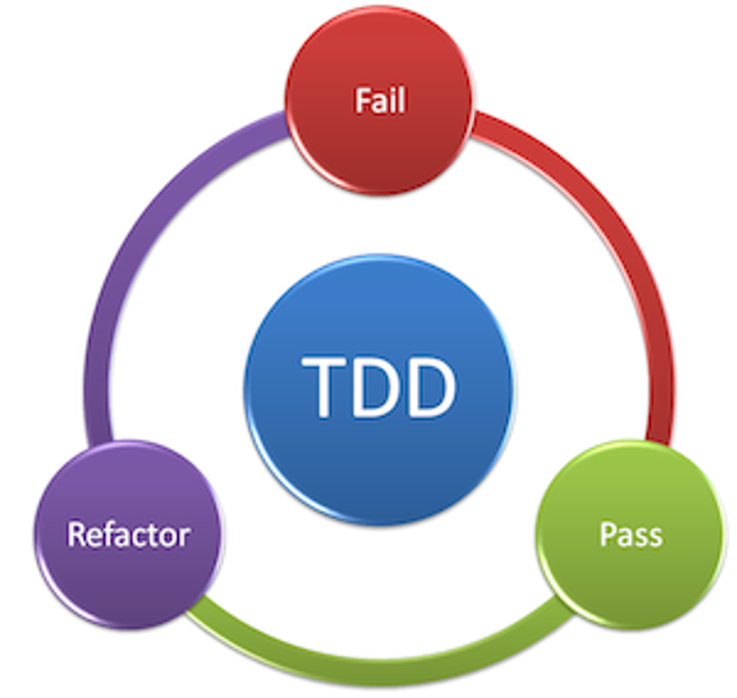

Михаил Кузнецов
Михаил Кузнецов
const sayHello = (name) => `Hello, ${name}!`;
module.exports = sayHello;
const sayHello = require('./sample');
test('Simple test', () => {
const result = sayHello('World');
expect(result).toBe('Hello, World!');
});
describe('sayHello', () => {
it('should say hello for World', () => {
const result = sayHello('World');
expect(result).toBe('Hello, World!');
});
it('should says hello to null', ....)
});

Тесты
Спасибо!
Не бойтесь Jest!